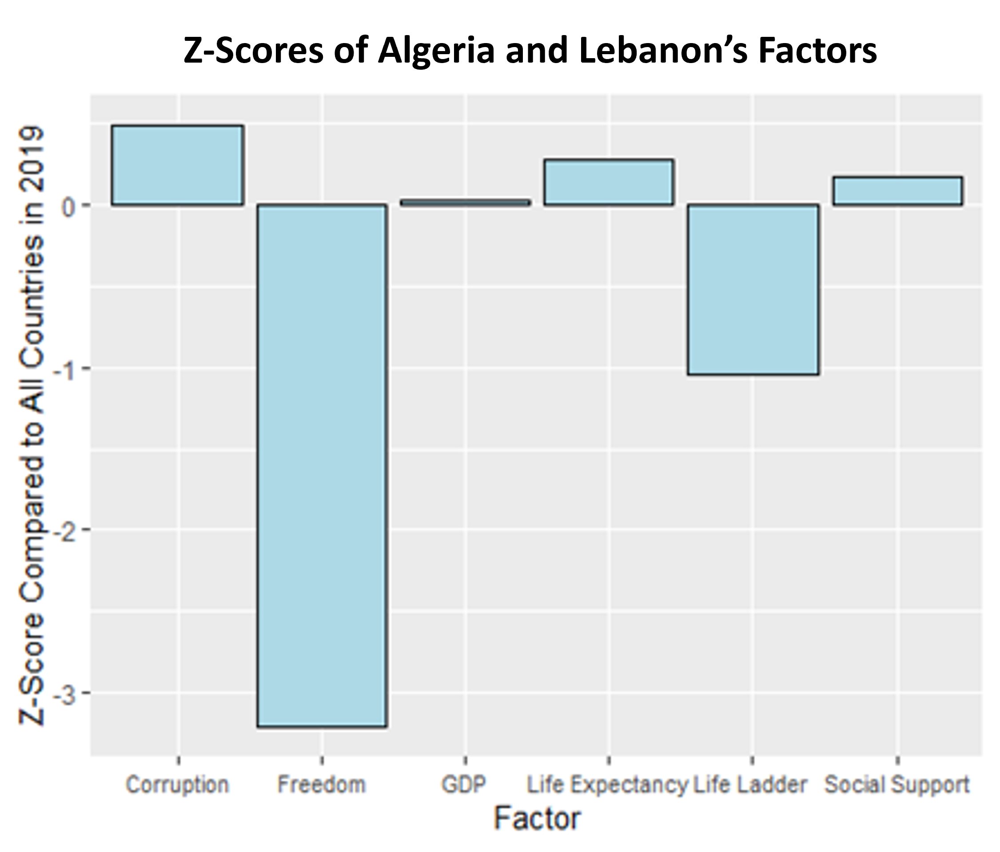
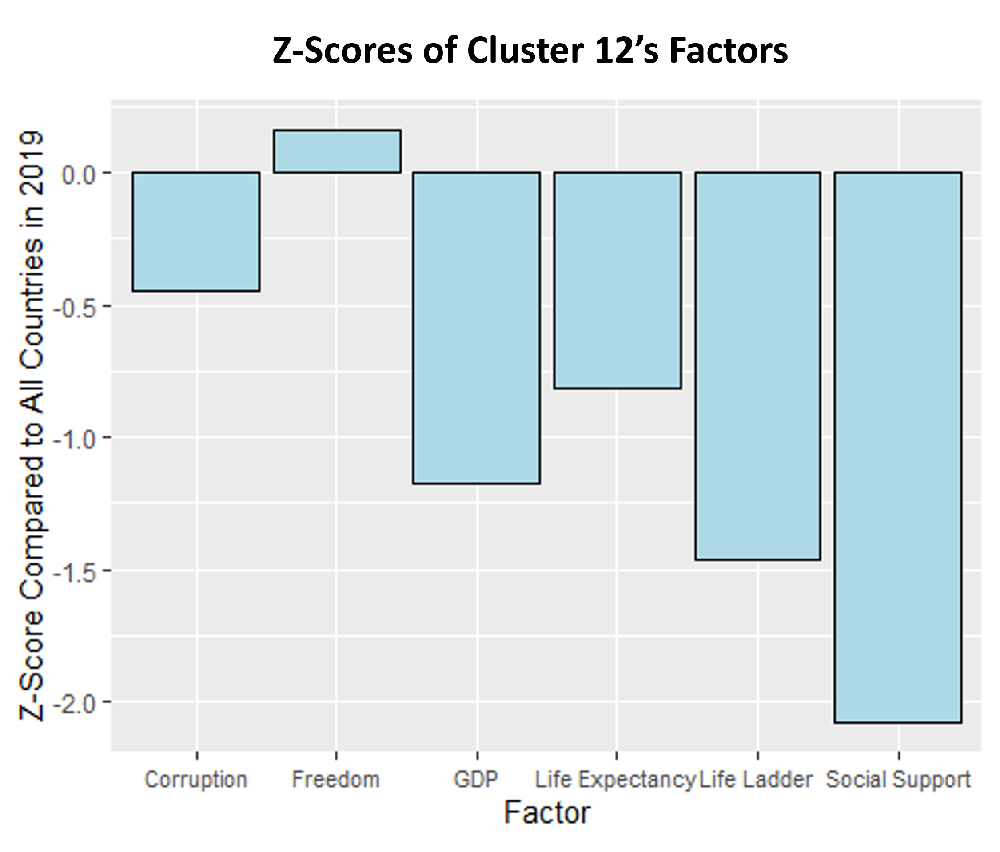
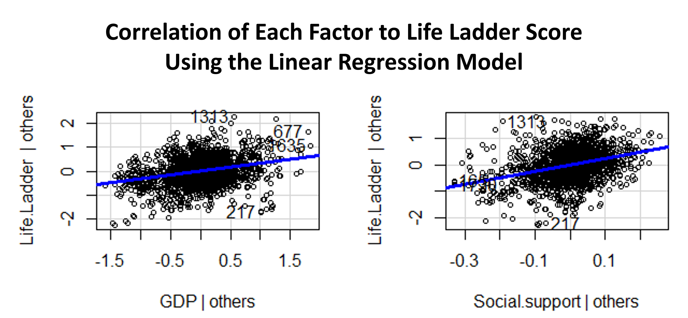
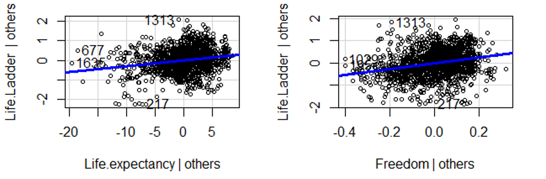
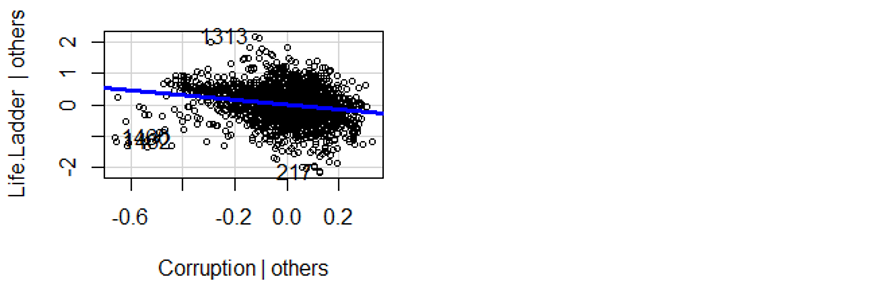
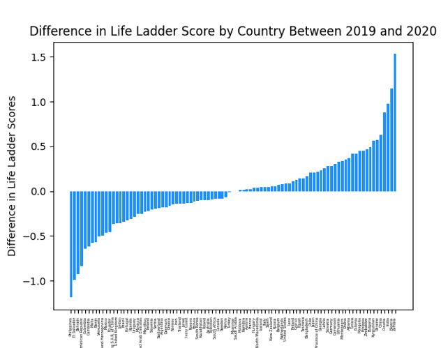

The Medical Insurance Dataset Analysis
Completed for the course Statistical and Machine Learning, Fall 2025
Analysis performed in Python.

Image from Unsplash
The Medical Insurance Dataset
Sourced from Kaggle, the medical insurance dataset contains 54 demographic, clinical, and insurance features for 100,000 clients.
The goal of this analysis is to perform regression modeling to predict clients' annual medical costs based on the demographic, clinical, and insurance features provided in the dataset.
After removing predictors which are unnecessary or would create data leakage, removing rows with anomalous data, and log-transforming skewed predictors, the dataset includes 96,956 clients and the following 36 features:
Categorical columns:
- sex: Sex
- region: The client's geographical region
- urban_rural: Whether the client lives in an Urban, Suburban, or Rural area
- education: The client's highest attained education
- marital_status: Marital status
- employment_status: Employment type/status
- smoker: Smoking status
- alcohol_freq: Freuqency of alcohol consumption
- plan_type: Type of insurance plan
- network_tier: Insurance network tier
- hypertension: Hypertension diagnosed
- diabetes: Diabetes diagnosed
- asthma: Asthma diagnosed
- copd: Chronic Obstructive Pulmonary Disease diagnosed
- cardiovascular_disease: Cardiovascular disease diagnosed
- cancer_history: History of cancer
- kidney_disease: Kidney disease diagnosed
- liver_disease: Liver Disease diagnosed
- arthritis: Arthrisis diagnosed
- mental_health: Diagnosed mental health condition
Numerical columns:
- age: Age of the client (years)
- log_income: Logarithm of annual income (USD)
- household_size: Number of people in the client's household
- dependents: Number of the client's financial dependents
- bmi: Body Mass Index
- systolic_bp: Systolic blood pressure (mmHg)
- diastolic_bp: Diastolic blood pressure (mmHg)
- ldl: LDL cholesterol level (mg/dL)
- hba1c: Hemoglobin A1c percentage
- deductible: Annual deductible (USD)
- copay: Copayment amount per healthcare service (USD)
- policy_term_years: Length of the insurance policy (years)
- provider_quality: Quality rating of the primary care provider/insurer (rated on a scale 0-5)
- risk_score: Calculated health risk score (0-1, normalized)
- chronic_count: Number of chronic conditions diagnosed
- log_annual_cost: Logarithm of total annual medical cost (USD) - The variable of interest
Exploratory Data Analysis
Categorical Predictors
Overall, log_annual_cost does not appear to vary depending on category for the predictors sex, region, urban_rural, education, marital_status, employment_status, alcohol_freq, plan_type, or network_tier because the boxplots appear approxmately uniform across categories for those predictors. Only the boxplot for sex is included here to represent the relationship between those predictors and log_annual_cost.

However, smoker appears to have an effect on log_annual_cost since clients who never smoked had a noticeably lower minimum, 25th percentile, median, 75th percentile, and maximum log(Annual Medical Cost) (ignoring outliers) than former smokers, who had lower values at each percentile than current smokers. This suggests that smoker would be a useful predictor for modeling.
Numerical Predictors
For the discrete numerical predictors:
- household_size and dependents appear to have no relationship to log (annual medical cost) since the distribution of log_annual_cost decreases in variance around the mean/median value as the predictor values increase and thus become less common.
- deductible, copay, and policy_term_years appear to have no relationship to log(annual medical cost) since the distribution of log_annual_cost is uniform across all values for those predictors.
- chronic_count may have some very weak relationship with log(annual medical cost) because the distribution of log_annual_cost appears to skew above the mean/median value as the predictor values increase.
For the continuous numerical predictors:
- log_income, ldl, and provider_quality have no correlation with log(annual medical cost).
- age, systolic_bp, diastolic_bp, and hba1c appear to have very weak positive correlations with log(annual medical cost).
- risk_score has a noticeable but weak positive correlation with log(annual medical cost).

Only the plots for household_size, deductible, chronic_count, log_income, age, and risk_score are included here to represent the various relationship patterns between numerical predictors and log_annual_cost.
Binary Predictors

All binary predictors appear to have a minor relationship with annual medical cost because, for each predictor, clients who had the condition had a noticeably lower minimum, 25th percentile, median, 75th percentile, and maximum log(Annual Medical Cost) (ignoring outliers) than clients without the condition. The difference in median log(Aunnual Medical Cost) between clients who had and did not have each condition is about equal, suggesting that all binary predictors could be a useful for modeling.
Only the boxplot for hypertension is included here to represent the relationship between all binary predictors and log_annual_cost.
Predictor Correlations
Correlations among predictors (>= 0.4) which can be intuitively explained:
Among health conditions and risks:
- chronic_count with risk_score (0.7): clients with chronic conditions are higher risk.
- chronic_count and risk_score with nearly all of the health conditions (hypertension, diabetes, etc.): many of those conditions are chronic and increase clients' health risks.
- diabetes and hba1c (0.8): diabetes is characterized by high hba1c.
- age with risk score (0.7) and systolic_bp (0.5): older people typically have more health risks and have higher risk of high blood pressure.
- hypertension with systolic_bp (0.6) and diastolic_bp (0.6): hypertension is high blood pressure.
- systolic_bp and diastolic_bp (0.4): higher pressure when the blood is pumped out of the heart (systolic pressure) is often accompanied by higher pressure when the blood is filling the heart (diastolic pressure).
Among healthcare/insurance factors:
- household_size and dependents (0.9): people living in the same household as the client (especially children) are typically their dependents.
When modeling with these combinations of predictors, we should include interaction terms, use regularization methods, or tree-based methods to properly handle the correlations.

Correlations between the response and predictors:
- log_annual_cost has its strongest correlations (>=0.3) with risk_score (0.4), and chronic_count (0.3), suggesting that these are the most important numeric predictors to include in a model.
- log_annual_cost has weaker correlations (=0.2) with age, systolic_bp, and hypertension, suggesting that these would also be useful predictors for modeling.
Model Development
Linear Regression
A lasso regression model pushed the coefficients of 21 predictors and dummy variables for categorical predictors to 0, suggesting that these are not useful predictors for a linear regression model. Many other predictors have coefficients close to 0, so the linear regression model will keep the following 15 predictors which had coefficients for which the absolute value is >= 0.01: chronic_count, age, risk_score, bmi, diabetes, copd, chronic_count*diabetes, chronic_count*arthritis, risk_score*copd, chronic_count*hypertension, risk_score*diabetes, chronic_count*mental_health, risk_score*age, risk_score*chronic_count, and smoker.
The predictors arthritis, hypertension, and mental_health will also be included in the linear regression model since they are used in the significant interaction terms, although they are not significant themselves.
| Variable | Coefficient |
|---|---|
| chronic_count | 0.457581 |
| risk_score | 0.252727 |
| copd | 0.138358 |
| diabetes | 0.111011 |
| mental_health | 0.061628 |
| arthritis | 0.054312 |
| hypertension | 0.046657 |
| bmi | 0.011475 |
| age | 0.008577 |
| risk_score*age | -0.002962 |
| risk_score | 0.252727 |
| chronic_count*diabetes | -0.014421 |
| chronic_count*hypertension | -0.028496 |
| chronic_count*arthritis | -0.030559 |
| chronic_count*mental_health | -0.037021 |
| risk_score*diabetes | -0.129977 |
| risk_score*copd | -0.154252 |
| risk_score*chronic_count | -0.156308 |
| smoker_Former | -0.313058 |
| smoker_Never | -0.457670 |
Interpretation
Mean R^2 from cross-validation: 0.168. On average, a linear regression model explains about 16.8% of the out of sample variation in log annual medical costs. Although seemingly low, this is actually a reasonable value for medical cost regressions since it is a difficult target to predict.
Main Coefficients
- The coefficients for clients who formerly and never smoked are drastically negative (-0.313 and -0.458). This tells us that smoking is a key contributer to higher medical costs in comparison to the last variable of smoking, which is current smoker.
- Each chronic condition a client has increases log annual medical cost drastically (0.458 log(USD) per chronic condition).
- Risk score increases are associated with higher medical costs (0.252 higher log annual medical cost for clients with a risk score of 1 compared to clients with a risk score of 0).
- Age has a surprisingly small coefficient, telling us that with age, log annual medical cost increases slowly (0.008 log(USD) per 1 year increase in age).
Predictor Correlations
The the top left, top center, and top right plots above show that life ladder scores appear to have a strong positive correlation with GDP per capita, level of social support, and life expectancy, respectively. This suggests that fluctuations in these values would have a significant effect on life ladder score.
The bottom left and bottom center plots above show a weak positive correlation and a weak negative correlation, respectively, between life ladder score and degree of freedom to make life choices and level of corruption, implying that changes in those factors would have a small influence on life-ladder score.
Finally, the bottom right plot above shows little correlation between life ladder scores and the level of citizens’ generosity, which suggests that generosity has little to no effect on life ladder score. This makes sense because these values represent “the residual of regressing the national average of GWP [Gallup World Poll] responses to the donation question ‘Have you donated money to a charity in the past month?’ on log GDP per capita” rather than level of generosity itself (Helliwell, et al. 39). Because of this, generosity has been omitted from the computations described below, and the remaining factors are referred to as “the five factors.”
K-Means Clustering Analysis
Performing a k-means clustering analysis of the 126 countries with reported data from 2019 (after scaling the data to ensure no variable dominated the analysis) produced 13 groups of countries with similar characteristics, as represented by similar values in life-ladder scores and the five factors. By examining these groups, philanthropic organizations could determine broadly which nations require similar help and which could serve as models for struggling countries.
The clustering analysis produced two groups with just one country each, suggesting that those two countries are quite different from all others in 2019. The first, Afghanistan, reported a very low life ladder score, GDP, level of social support, life expectancy, and degree of freedom and a high level of corruption. The second, Singapore, reported an above average life ladder score; a high GDP, level of social support, life expectancy, and degree of freedom; and a low level of corruption. Overall, this implies that Afghanistan is the country most in need of humanitarian aid while Singapore should serve as a model for the rest of the world.
This analysis also reveals which countries have similar issues and would thus benefit from similar aid missions. Algeria and Lebanon, which make up a cluster of two, report above average GDP, level of social support, life expectancy, and level of corruption but a low life ladder score and very low degree of freedom. Citizens of these nations could best benefit from political reform allowing greater freedoms. The cluster containing Benin, India, Malawi, Morocco, Rwanda, Tanzania, and Zambia (named Cluster 12) has a low life ladder score, GDP, level of social support, and life expectancy but an above average degree of freedom and below average level of corruption. This suggests that these countries experience more economic than governmental issues and would benefit from measures to stimulate the economy, improve working conditions, provide community support systems, and increase access to adequate and affordable healthcare.


Regression Model



A regression model with life-ladder score as the response variable and the five factors as predictors estimates the impact each of the five factors has on a country’s life-ladder score. The linear regression model with the form Life Ladder Score = -1.863749 + 0.334608(GDP) + 2.378443(Social Support) + 0.029624(Life Expectancy) + 1.314385(Freedom) – 0.769423(Corruption) accounts for 74.47% of the variation in life-ladder score. The plots to the left show the correlation between each factor and life ladder score as defined by the model when all other variables are held constant. The figure displays the positive correlation between life ladder score and GDP, level of social support, life expectancy, and degree of freedom and the negative correlation between life ladder score and level of corruption predicted by the data visualization step of this analysis.
Non-profit and non-governmental organizations could use this regression model to predict how effective a philanthropic intervention targeting one of the five factors would be in increasing a nation’s life-ladder score, which generally correlates to citizens’ quality of life. For instance, measures to improve access to and quality of healthcare that correspond to a one-year increase in a country’s life expectancy could be expected to correlate with a 0.029624 in that nation’s life ladder score.
Impact of the COVID-19 Pandemic on Life-Ladder Scores
Since life ladder score approximates quality of life in a given country, comparisons of life ladder scores by country between 2019 and 2020 could reveal the impact of the COVID-19 pandemic on quality of life.
Because the distribution of the difference in those yearly scores by country is roughly symmetrical and about half of the countries experienced a decrease in life ladder score while the other half experienced an increase, the World Happiness Report does not appear to reflect changes to quality of life during the COVID-19 pandemic.

Conclusion
The World Happiness Report offers insight into a country’s quality and condition of life via the life ladder score and six factor values. Because the goal of humanitarian work is to improve quality of life within a community, analysis of the data from the World Happiness Report allows non-profit and non-governmental organizations to determine the most effective countries to target and mission types to design in their work.
Using citizens’ happiness to signify overall quality of life emphasizes both the well-being of individuals and of their community because individual betterment benefits the community and community betterment benefits the individual. Acknowledging this symbiotic relationship can lead to improvements in both individual and community happiness, as taught by the World Happiness Report.